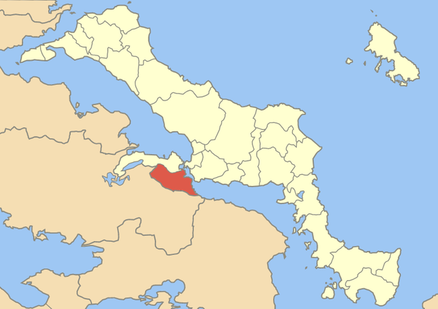
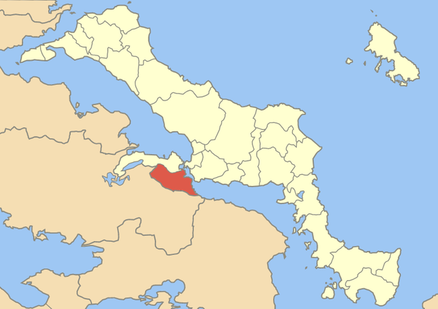
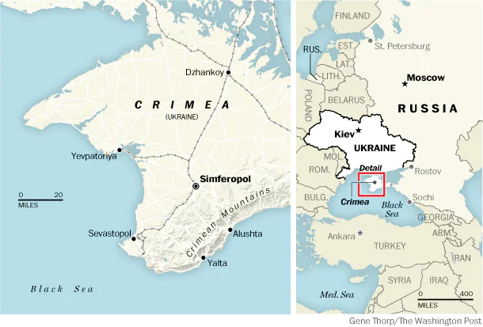

Áulide
La primera parte del relato tiene lugar en Áulide, donde Ifigenia se enfrenta a su destino.
La primera parte del relato tiene lugar en Áulide, donde Ifigenia se enfrenta a su destino.
En la segunda parte de la historia, Ifigenia es llevada a Táurica, una región en la península de Crimea.
